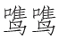

斜阳照墟落 [1] ，穷巷牛羊归 [2] 。野老念牧童 [3] ，倚杖候荆扉 [4] 。雉雊麦苗秀 [5] ，蚕眠桑叶稀 [6] 。田夫荷锄至 [7] ，相见语依依 [8] 。即此羡闲逸 [9] ，怅然吟《式微》 [10] 。
【题解】
渭川，即渭河，黄河主要支流之一。诗写初夏黄昏农家景色和闲逸情趣，表现了诗人意欲归隐的思想。有人认为诗当作于开元二十九年（741）至天宝三载（744）间，时王维在终南山麓过着亦官亦隐的生活。
【评析】
这首诗前八句，为我们描绘了一幅恬适温馨的农家晚归图。在这幅生意盎然的画面上，有优美的自然景色：落日洒金，牛羊归村，雉鸣蚕眠，麦秀桑稀。更有田家情深的动人场面：野老倚杖门外，等候牧童归来，有的是慈爱和企盼；田夫荷锄相遇，边走边谈不休，有的是亲切和惬意。即目所见，信手写来，不事雕绘，清新自然。此情此景，遂使诗人浮想联翩，他可能想到尔虞我诈的龌龊官场，于是情不自禁地发出了“即此羡闲逸，怅然吟《式微》”的喟叹。前八句是宾，末二句才是主，宾为主设，情因景生，宾详主略，引人深思。高步瀛评此诗曰：“天趣自然，踵武靖节（陶渊明）。”（《唐宋诗举要》卷一）陶云：“归去来兮，田园将芜胡不归！”（《归去来兮辞》）王则曰：田家乐兮胡不归？面对渭川田家迷人的晚归图，王肯定和陶一样，油然产生了“误落尘网中”、“守拙归田园”（陶渊明《归园田居五首》其一）的想法。
【注释】
[1] 斜阳：一作“斜光”。墟落：村落。
[2] 穷巷：深僻小巷。牛羊归：《诗经•王风•君子于役》：“日之夕矣，羊牛下来。”
[3] 念：挂念。
[4] 候：等候。荆扉：柴门。
[5] 雉雊（ɡòu）：野鸡鸣叫。麦苗秀：小麦吐花，俗称“秀穗”。语本潘岳《射雉赋》：“麦渐渐以擢芒，雉

而朝雊。”
[6] 蚕眠：蚕老作茧。
[7] 荷锄：扛着锄头。陶渊明《归园田居五首》其三：“带月荷锄归。”至：一作“立”。
[8] 语依依：亲切絮语，不忍离去。
[9] 即此：指上面见到的情景。羡：羡慕。闲逸：闲适安逸。
[10] 怅然：惆怅失意貌。式微：《诗经•邶风•式微》：“式微，式微，胡不归？”式：发语词，无实义。微：通“昧”，指黄昏。意为日暮黄昏，为什么还不归来？此指自己向往归隐。